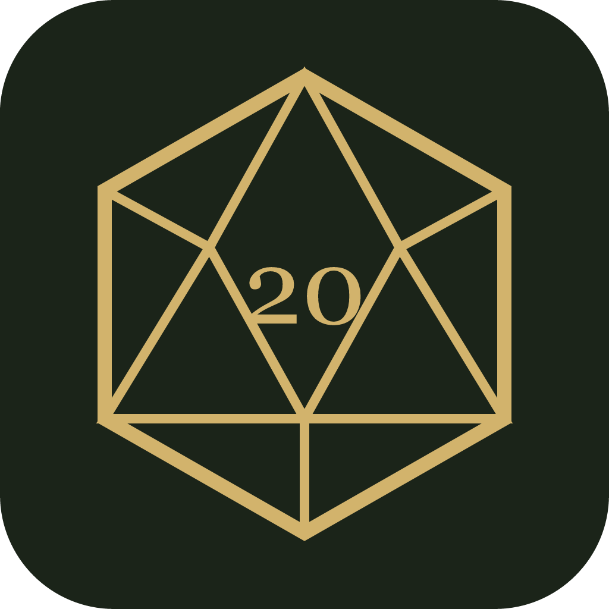
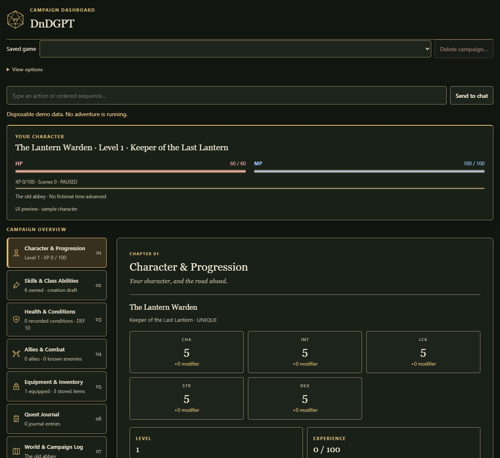

Character & progression
Know what your hero can do.
Check attributes, resources, class abilities and earned upgrades without searching through the conversation.

DnDGPTA fantasy RPG MCP app for ChatGPT
Create a class, meet your companions, and find out what waits beyond the next gate. ChatGPT runs the story. DnDGPT keeps your character, abilities and campaign progress in a saved dashboard beside the conversation.
ChatGPT creates your classes and abilities within the game's lore and rules. You can write your own, revise its ideas, or change the campaign's direction.
Free to use. Bring a ChatGPT account with custom MCP connections.
Inside ChatGPT
Play in the chat. Check your character, read an ability, or catch up on the story in the dashboard.


Made for your campaign
Your classes and abilities are generated for the campaign, rather than chosen from a fixed catalog. The rules include a uniqueness gate: ChatGPT checks the proposed mechanics, practical uses and identity before offering them. It guides the model; it cannot guarantee originality every time.
The rulebook supplies the Age of Convergence lore and the game rules. ChatGPT builds your campaign's region, people and adventure from that setting. Five attributes including Luck, HP and MP, rarity rolls and earned upgrades give the homebrew system its own progression.
Type your own class or ability, revise an offer, or ask for a different setting, tone or way of playing. You can also change how ChatGPT writes and presents its responses. Agree on any rule changes with the GM before using them in the campaign.
Keep the adventure together
DnDGPT is a standalone 5e Hack with D&D-inspired d20 rules. ChatGPT handles the GM conversation; the connected service stores the campaign updates it saves.
Explore the dashboardCharacter & progression
Check attributes, resources, class abilities and earned upgrades without searching through the conversation.
Companions & possessions
Read companion commands, look through equipment, and check the things you've picked up.
World & campaign log
Read a compact campaign brief, compare saved versions or preview a correction before approving it. Download a private campaign file and restore it as a separate paused copy. Auth0 handles sign-in; Appwrite stores the saves.
Continuity and recoveryFrom Deon
OpenAI announced Plugin Extensions at DevDay on September 29, 2026, with sidebar entries and interactive panels beside the conversation. Then Intelligent UI arrived on October 7, 2026, bringing interactive responses into the chat.
I thought Intelligent UI was cool, and combining it with a saved campaign dashboard felt like one of those "it came to me in a dream" ideas. I could use the conversation for a fantasy RPG, with interactive story choices in the chat and my character sheet beside it.
I wanted to try unusual classes and abilities without digging through chat every time I forgot what one did. That's where DnDGPT started. ChatGPT handles the GM side, and the dashboard gives me somewhere to check my character and pick the campaign up later.
The project is on GitHubWhen you're ready
DnDGPT is free to use with a ChatGPT account that supports custom MCP connections. A paid ChatGPT subscription is recommended for longer play sessions and higher message limits. Availability and limits vary by plan and workspace. Compare ChatGPT plans.